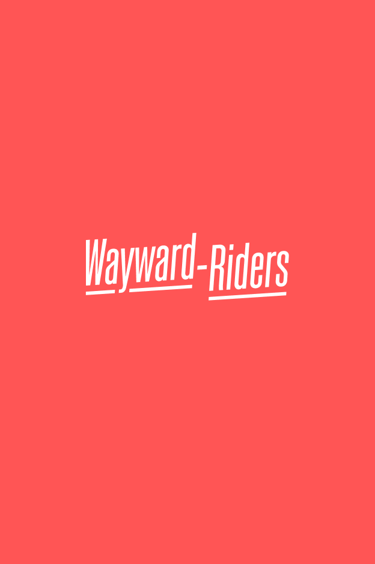

2019 — Present, Wayward Riders



2019 — Present, Wayward Riders
In a side step from digital product design, I created a physical product. It’s for holding gear onto your seat during multi-day mountain biking adventures.
Those who live and breath such products have rated it highly. More can be seen at waywardriders.com.